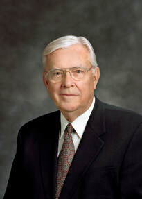
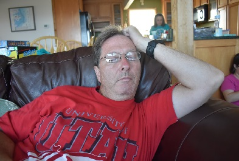

Give Thanks
12/6/2020
My wife and I recently drove south to Georgia to spend Thanksgiving week with our daughter Kyra
and her family. Like several of our children, Kyra is a certified SCUBA diver, but has not done
much diving since her certification. She and I made a side trip to north Florida to go diving in
a popular diving spring known as The Blue Grotto. It’s not far from where our nephew lives with
his family so we were able to visit with them for a night. We got a short night dive that
Friday, then two dives on Saturday before driving back to Georgia.
One of my church responsibilities is to work with the Stake Young Women President on stake
sponsored youth activities. The activity planned last month was a movie night. I got the
assignment to make sure all the tech was set up and working. I got word there is a portable
large screen in the stake building. I called a brother I know in Aquia Ward to see if he knew
anything about it. He described where he thought the screen is stored. Unfortunately to get to
it required getting into the building. I have keys for a closet in the building, but not to the
building itself. In the mean time I was scanning the Internet looking for screens to buy as an
alternative, but for one reason or another never hit the add-to-cart button.
While wondering how to resolve the screen-need issue I decided to check my personal email. In it
I found a note from Brother Zappe of the Garrisonville Ward. He is the Stake Executive
Secretary. He sent me a personal code to give me access to the building. I had not reached out
to him with a request. As a result I sent him this email:
Thank you! Perfect timing. You seem to be listening to the Spirit. I was just considering how I
could get in to find and inspect the large projection screen we will need for the next stake
youth activity. Brother Gillespie told me about it and where it is, but I had no way into the
building.
Here is the response I got from him:
Great!! Well, likely the case. I was sitting here and it popped into my head that I need to
issue the remainder of the codes. Glad it worked out!
As we celebrate the Thanksgiving season and I think what I am thankful for, I am thankful that
Heavenly Father is involved in the details of the individual life of each of us. I’m grateful
for the influence of the Spirit. I’m comforted to see others who are paying attention to moments
of inspiration and acting on those promptings.
I hope each of us has experiences of similar note. Always act on them. I know in today’s culture
being a ‘tool’ is thought of as a negative, but for me purposely being a tool of Heavenly Father
is a goal. It’s His work. We can be a tool in His hands for the blessing of others.
Watch and Pray
11/9/2020

Autumn has definitely arrived here in Virginia. October brought us cooler, wetter weather. It brings
with it anticipation for costumes and candy to many. It also brings renewed church attendance. In
this area we have been able to slowly return to church services. Before General Conference the wards
were meeting on a rotational basis and in small groups. The Aquia Ward which we attend was meeting
every third week with multiple sessions of Sacrament limited to 25 people at a time. Under those
circumstances I was able to visit units in my capacity in the Stake High Council.
In October we enjoyed general conference. What a joy, and so many specific and inspired messages
directly applicable to the current world experience. At the same time, beginning October 1, the
Virginia meeting restrictions have been loosened by state government. As a result we were all able
to attend sacrament meeting together again in one body. Masks, social distancing, and a limit to
just one meeting were the rule, nevertheless it’s clear coming together is a blessing.
I spoke at the Accokeek Ward. Bishop Bracero asked me to think about member-missionary work from the
idea of what general conference message I would advise us to share with others. I immediately
thought of President M. Russel Ballard. I’ve always liked his approach to speaking; direct and clear
messages. I first heard him when he was serving in the First Quorum of Seventy. I was on my mission
in southern Spain. His daughter was serving there as well. As she finished her time of service,
Elder Ballard and his wife came to Spain. He was giving conferences across Europe on assignment.
They timed it so as to be able to take their daughter with them on the tour before heading back
home.
As it turns out his recent conference talk not only drew me because of the speaker, but because of
the topic. It’s titled Watch Ye Therefore, and Pray Always. While setting personal goals this past
year I decided to use the youth program approach. I divided goals in the areas of spiritual, social,
physical, and intellectual. Among my spiritual goals I wrote, “Have more meaningful private prayer.”
Before work shifted my efforts from office to home-office my schedule was quite overbooked. My
morning prayer was something that tended to happen while riding the train into Washington DC each
day. Evening prayer was less steady and often didn’t happen until I was pretty much exhausted from
the day, if it happened at all. With this goal in mind I did become more focused before the
pandemic. With all the changes I still have a heavy load to carry each day. Despite this, my
schedule leaves me with more flexibility and privacy than I would in the public or office arena.
In his talk, President Ballard shares the following words from the Savior:
Luke 21:36
36 Watch ye therefore, and pray always, that ye may be accounted worthy to escape all these things
that shall come to pass, and to stand before the Son of man.
I can’t speak for others, but as I watch all the anger, fear, discouragement, and economic distress
going on around me, I’m able to count my blessings as I speak with Heavenly Father. President
Ballard speaks to our own prayer in this way. “I think often of those of you who are suffering,
worried, afraid, or feeling alone. I assure each one of you that the Lord knows you, that He is
aware of your concern and anguish, and that He loves you—intimately, personally, deeply, and
forever.”
To the speaking topic assignment Bishop Bracero gave me, I think the best thing we can do is to
encourage others likewise to pray. Again from President Ballard, “Today I expand my call for prayer
to all people from every country around the world. No matter how you pray or to whom you pray,
please exercise your faith—whatever your faith may be—and pray for your country and for your
national leaders.” I firmly believe that if an individual approaches God from where ever they are
today, He will lead them closer to truth. Approaching truth will inevitably lead people in one way
or another toward the Gospel.
President Ballard also shared, “During the past few months I have had the impression come to me that
the best way to help the current world situation is for all people to rely more fully upon God and
to turn their hearts to Him through sincere prayer. Humbling ourselves and seeking heaven’s
inspiration to endure or conquer what is before us will be our safest and surest way to move
confidently forward through these troubling times.”
It’s easy to get pulled into judging and allowing ourselves to be angered. As we note how far away
we judge others to be from our own way of thinking, do we seek some form of justice to them, or do
we seek for them to find the same peace we seek for ourselves? Again from President Ballard’s
talk:
Matthew 5:44
44 But I say unto you, Love your enemies, bless them that curse you, do good to them that hate you,
and pray for them which despitefully use you, and persecute you;
Praying for a change of heart in others should be accompanied by a prayer for our own change of
heart that we might be more in tune with His will, and more accepting of His will over our own.
President Ballard points out how the Savior prayed, then He went about doing good:
Acts 10:38
38 How God anointed Jesus of Nazareth with the Holy Ghost and with power: who went about doing good,
and healing all that were oppressed of the devil; for God was with him.
May we follow the Lord’s example. Let’s pray for others, let’s encourage others to pray. Let’s go
about doing good.
|

Michael Beach
Grew up in Berwick, PA then lived in a number of locations. My wife Michelle and I currently live
in VA. We have 6 children and a growing number of grandchildren. We love them all.
|